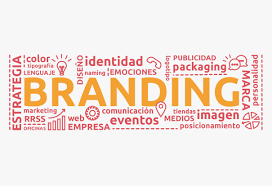
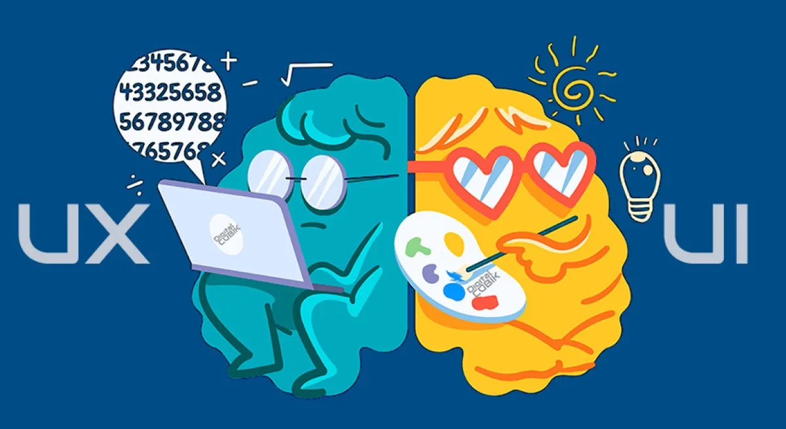

Portafolio de Servicios
Branding completo

Transformamos ideas en identidades vivas
Nuestro servicio de branding completo acompaña a marcas desde su esencia hasta su expresión visual y verbal. Creamos universos coherentes que comunican, emocionan y perduran. No solo diseñamos marcas: las escuchamos, las sentimos y las proyectamos con propósito. Cada branding que creamos tiene alma, estrategia y belleza.Enfoques opcionales
Branding emocional: Ideal para marcas que quieren tocar fibras sensibles y generar vínculos duraderos.
Branding cultural: Perfecto para proyectos que quieren destacar su identidad local, como la Huilensidad.
Rebranding: Si tu marca ya existe pero necesita renovarse sin perder su esencia.
Diseño UX/UI

Diseñamos experiencias que se sienten, no solo se ven
Nuestro enfoque en UX/UI combina estética, funcionalidad y empatía para crear interfaces que guían, inspiran y resuelven. Entendemos que detrás de cada clic hay una persona. Diseñamos con empatía, estrategia y belleza para que cada experiencia digital sea memorable.
Enfoques especiales
Diseño inclusivo: Interfaces pensadas para todos, sin barreras.
Diseño emocional: Elementos visuales y narrativos que generan conexión y confianza
Diseño para causas: UX/UI aplicado a proyectos sociales, educativos o culturales.
Animaciones gráficas

Diseñamos movimiento con propósito
Cada animación que creamos tiene una razón de ser: guiar, emocionar, sorprender o reforzar la historia de tu marca. Desde microinteracciones sutiles hasta narrativas visuales completas, el movimiento se convierte en lenguaje
Enfoques especiales
Animación emocional: Movimiento que refuerza sensaciones como ternura, sorpresa, nostalgia o alegría
Animación cultural: Elementos visuales que celebran raíces, como la Huilensidad, con ritmo y simbolismo
Animación interactiva: Diseños que responden al usuario, creando experiencias más inmersivas